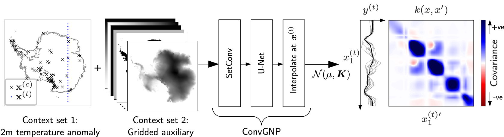

Paper Link: https://doi.org/10.1017/eds.2023.22
 ## Motivation
The object of interest of this paper is the environmental / climate data, and the task of interest is to model them for various downstream tasks such as sequential experiment designs and predictions. The object of interest, climate data, has two key properties: (1) spatiotemporal non-stationarity, and (2) large data volume and high data variability. They will be further explained below. Ultimately, these two properties make the standard probabilistic model of choice - the Gaussian Process - unsuitable and a new model, the Convolutional Gaussian Neural Process (ConvGNP) is proposed in the paper as an alternative.
Climate variables are non-stationary across time and space due to seasonality and other natural phenomena, so the probabilistic model must capture those characteristics to be sufficiently realistic. The standard Gaussian process could potentially encode them via the careful design of the kernel, which is non-trivial.
There is also a large volume of existing climate data, and they could be of very different formats (e.g. satellite images, weather station observations). GP is notoriously unscalable in data size, and the varied formats prevent us from a direct compilation of data since we cannot assume all the available data are numerical and measuring the same thing. This issue of data format variability also exists in other disciplines, such as ecology (e.g. citizen science and integrated population model).
Given these constraints of the problem, we need a model that scales better with data size and can learn non-stationarity more automatically, which motivates the introduction of ConvGNP.
Model Setup
The model is trained as a regression with covariates. The base regression is an input (region of consideration) and output (environmental variable of interest) assisted by covariates / contexts (from other weather observations). The result of a fitted model is a map \(\pi\) that takes a possible input along with its covariate values and returns a prediction of the output value.
The above is extremely high-level and overly simplistic. The overall map \(\pi\) of ConvGNP is constructed as a Neural Net with the following structure:
\[ \text{Context Set }C \to \textbf{SetConv} \longrightarrow \textbf{U-Net} \longrightarrow \begin{matrix} \textbf{Multilayer} \\ \textbf{Perceptron} \end{matrix}\to \begin{bmatrix} \text{mean vector } f\\ \text{covariance matrix }g \end{bmatrix} \]
where the bold texts refer to the NN architecture and the standard texts refer to the inputs (the context set includes both the input location and the associated covariate values) and outputs (a mean vector and covariance matrix used for a overall multivariate Gaussian output).
The \(\textbf{SetConv}\) layer fuses the various formats of data together on a regular grid that is enabled by interpolations so missing data and irregularly gridded data can be understood. The \(\textbf{U-Net}\) produces a representation of the context set, like learning the latent variable structures. The \(\textbf{Multilayer Perceptron}\) takes in the representations and outputs the mean vector and covariance matrix used by a multivariate Gaussian distribution to support a probabilistic outcome. Details about the NN architecture are omitted here.
Essentially, ConvGNP uses an NN to ingest a large volume of data and outputs a predictive multivariate Gaussian distribution - combining the processing power and scale of NN and the uncertainty quantification of a GP.
To get a rough sense of the speed and the amount of data ConvGNP is capable of, here is a footnote from the paper.
Our ConvGNP (with 4.16 M parameters) takes 0.88 s to process a total of 100,000 context points (21,600 temperature points and 78,400 gridded auxiliary points) and predict over 100,000 target points on a 16 GB NVIDIA A4 GPU using TensorFlow’s eager mode.
Experiment Design
One key application considered in this paper is to use a trained ConvGNP to assist an experiment design task of sensor placement where we wish to find the optimal locations to place sensors in order to maximise our knowledge about a region’s environmental variable observations. The setup considered in the paper’s experiment is that we are placing the sensors at once, instead of sequentially (in the case of sequential experiment designs and Bayesian optimisation).
Some numerical simulations are conducted in the paper to compare the performance of experiment designs when surrogate models are ConvGNP and other GP models. ConvGNP does perform better, but it is also using A LOT more data than the other GP models (for example the contextual data are not used for the other GP models). It would be interesting to see how the performance comparison will change when we allow the other more standard GP models to incorporate more “expert knowledge” summarised from the contextual data.
Another thing that ConvGNP could not do - at least the version of the model introduced in the paper - is to sequentially update itself using incremental observations, which can be done by standard GPs. This will be a nice feature that enables sequential experiment designs, which are very relevant in the context of environmental data explorations.
Discussion
Overall, the paper proposed a deep learning model ConvGNP that can be used to model and predict environmental data and admits natural uncertainty quantifications. The model is extremely suitable in cases where we have an abundance of available training data with varying formats and fidelities. The uncertainty quantifications provided by ConvGNP allow applications to some types of experiment designs, which is great. Further work that extends the model to allow sequential updates and data assimilations would further enhance its attractiveness in the sequential experiment design application.